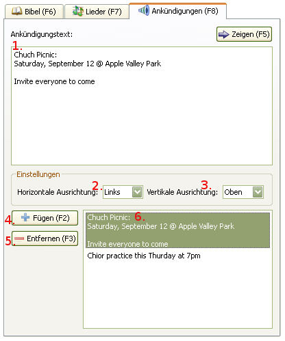

2.4 Ankündigungen anzeigen
Für Anzeigen der Ankündigungen:

1. Ankündigunstext-Fenster:
Den Text kann man entweder eintippen oder aus dem Puffer eintragen. Er muss einfach, ohne Formatierung sein.
Die Länge des Textes und die Anzahl der Zeilen sind unbegrenzt.
2. Horizontale Ausrichtung:
Die Einstellung der Text-Ausrichtung: links, zentriert und rechts.
3. Vertikale Ausrichtung:
Die Einstellung der Text-Ausrichtung: oben, zentriert und unten.
4. "Hinzufügen" -Knopf:
Hinzufügen des Ankündigunstextes (1) in die "Abspiel"-Liste (6).
5. "Entfernen" -Knopf:
Entfernt den Ankündigungstext aus der Liste.
6. Ankündigungstext-"Abspiel"-Liste:
Dieser Text beinhaltet Ankündigungen für die nächste Nutzung.
Beim Wählen eines Textes aus dieser Liste wird der vorhandene Text in dem Text-Fenster(1) ausgetauscht.